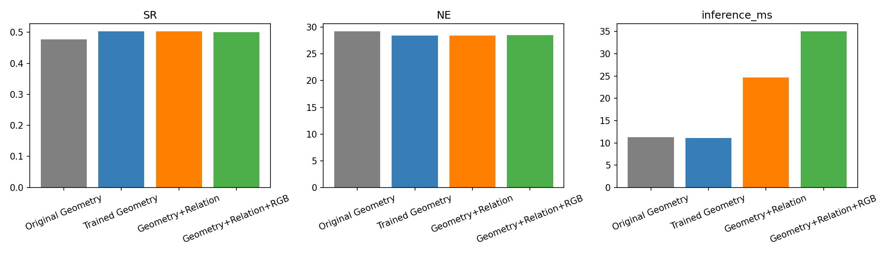
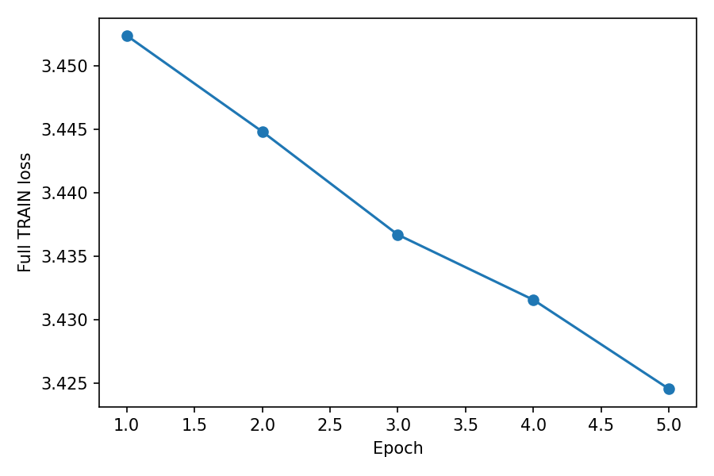
The building on Bragg Road that has a small white car on the street in front of it and a large tree across the street.
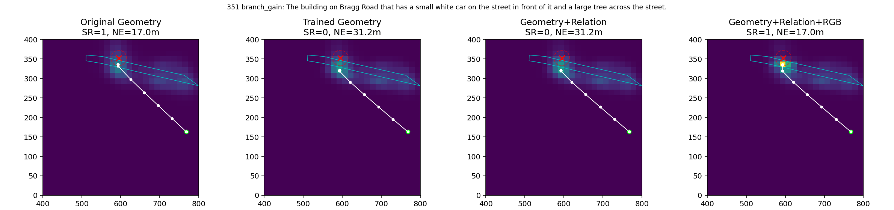
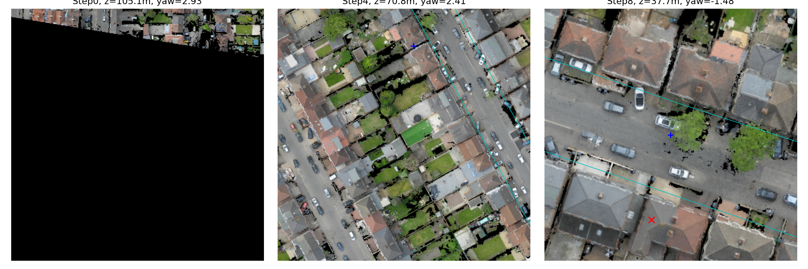
原生RGB 原生RGB 原生RGBThe gray house that is 4th from the left in the row of 6 houses on Park Parade.
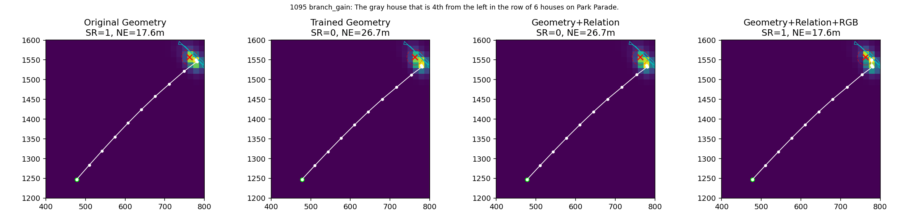
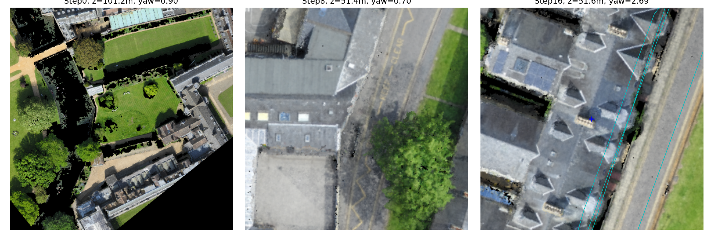
原生RGB 原生RGB 原生RGBA white car is parked at the right side parking area of Perry Barr Bus Depot, no car parked at its left, right and back side.
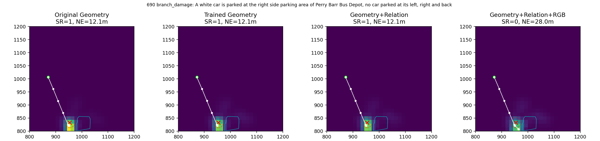
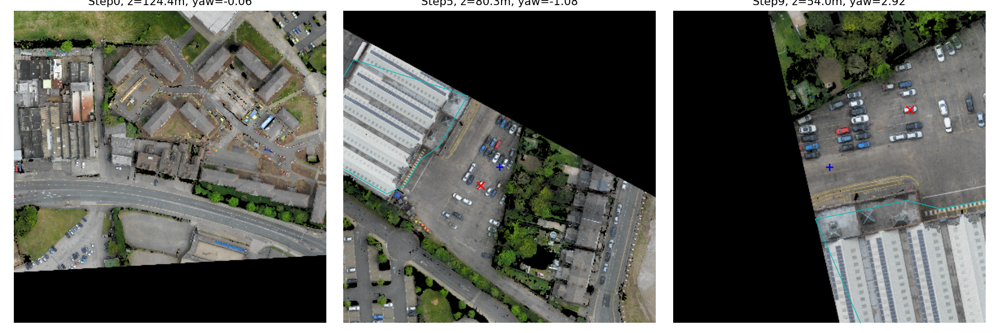
原生RGB 原生RGB 原生RGBThe white car between a black car and a white car parked against the building behind the Master's Lodge.
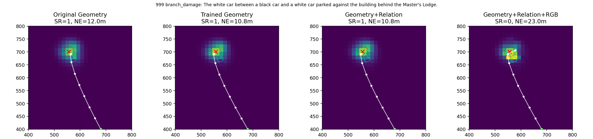
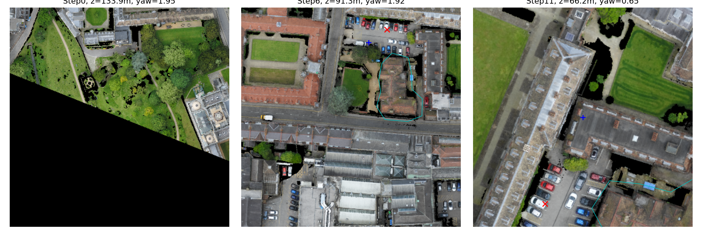
原生RGB 原生RGB 原生RGBThe building on Wellington Road that has a bright blue car in front of it.
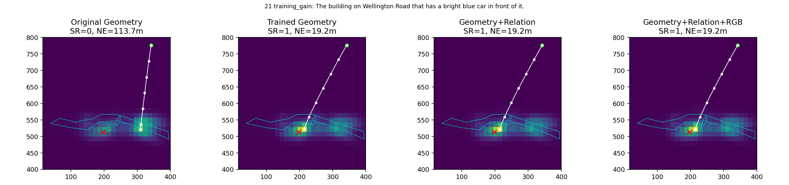
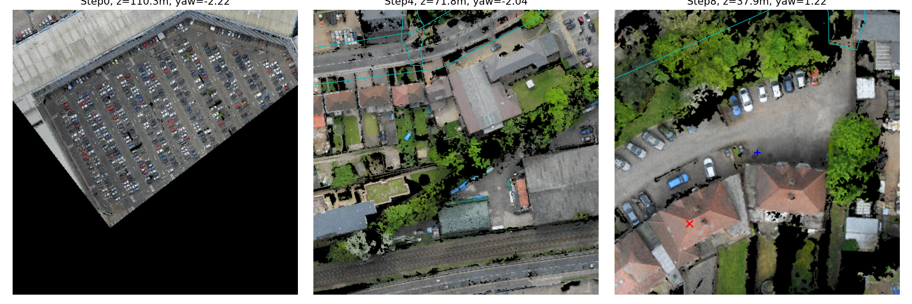
原生RGB 原生RGB 原生RGBThis is a large brick building at the corner of Birchfield Road and Bragg Road. A yellow van is parked behind the building.
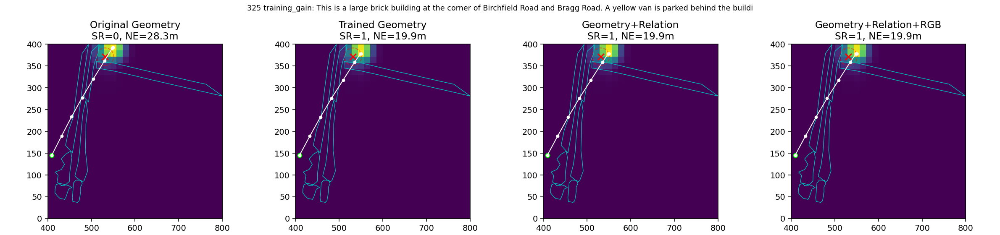
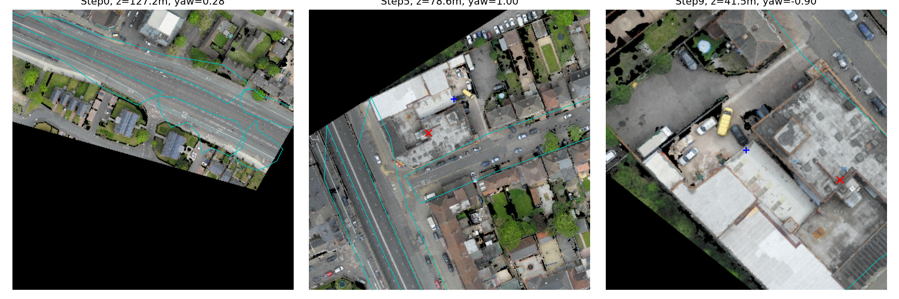
原生RGB 原生RGB 原生RGBBetween section of two houses, both colored white and brown with brown roofs, with the house on the right having a yellow rectangular object in the driveway off Wellington Road
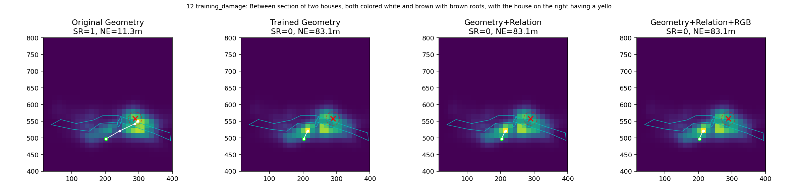
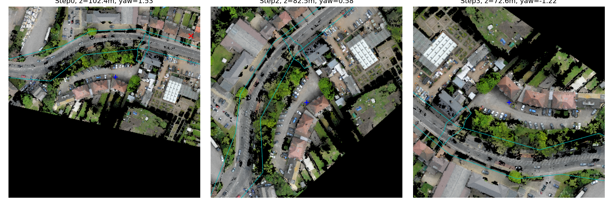
原生RGB 原生RGB 原生RGBRight section of a multicolored Brown, white and beige house with a multi-colored Brown and gray roof, as a white car in front of it, and a rectangular grass field in its backyard surrounded by Brown cement, off bragg Road
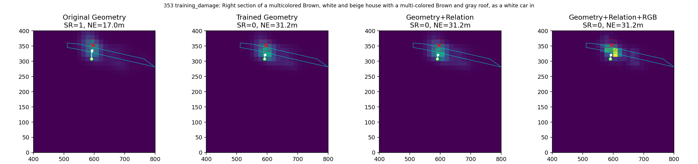
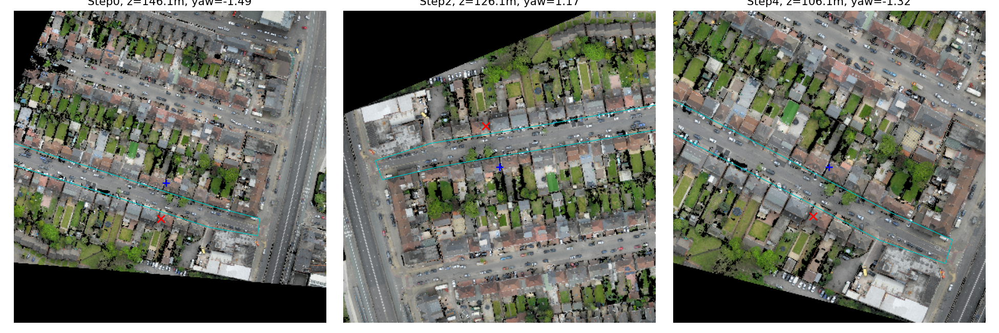
原生RGB 原生RGB 原生RGBThe row of grayish brown houses on Leslie Road to the left of the gray house at the intersection with Wellington Road.
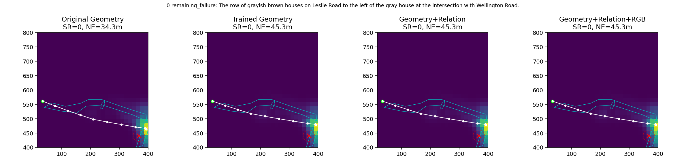
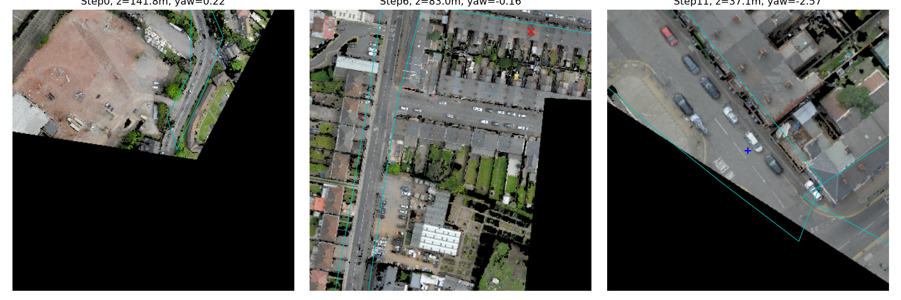
原生RGB 原生RGB 原生RGBThe dark gray house on Birchfield Road that is 1 house to the right of the brown building at the intersection with Canterbury Road.
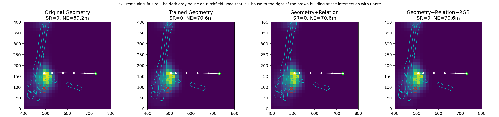
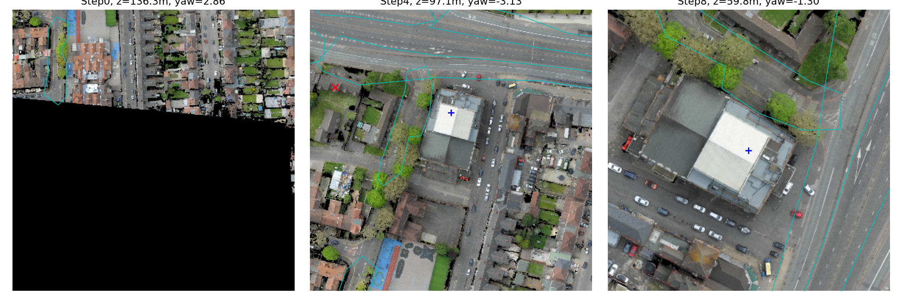
原生RGB 原生RGB 原生RGBThe long row of gray houses with cars parked in front of them along Leslie Road.
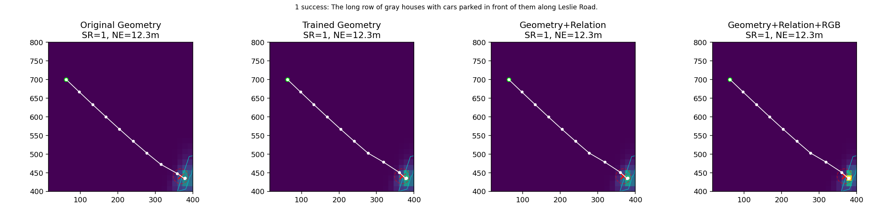
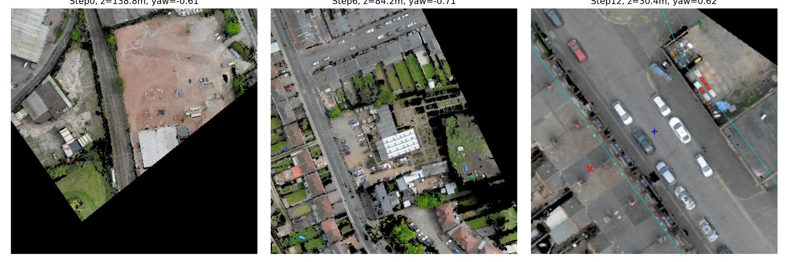
原生RGB 原生RGB 原生RGBThe building on Birchfield Road that has another building that looks like it in the backyard on Penhurst Avenue. There is a path between the buildings.
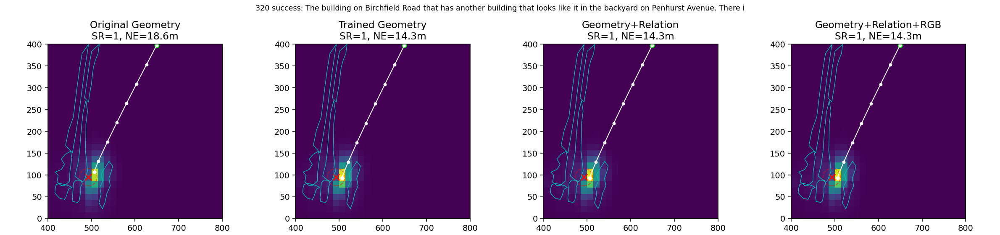
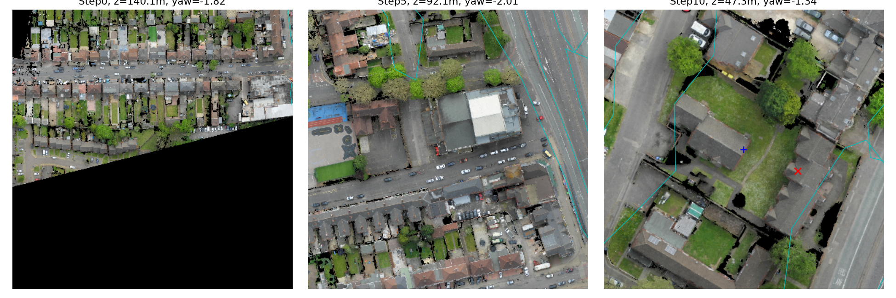
原生RGB 原生RGB 原生RGB